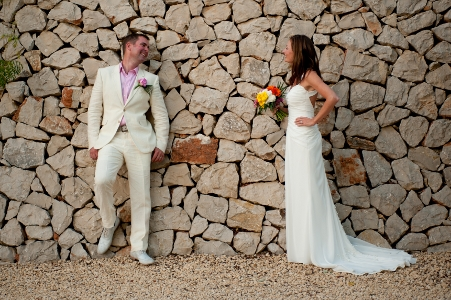
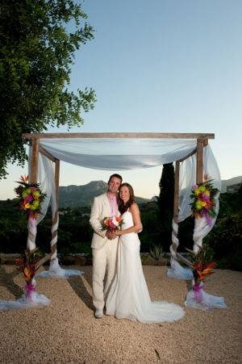
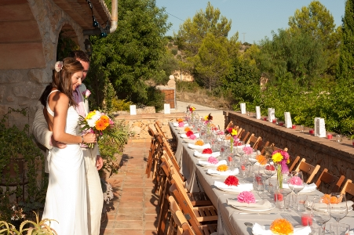

A Wedding Abroad
Anna and Paul’s spectacular hilltop wedding in sun-scorched Costa del Sol
The Venue
A stunning Spanish finca created the perfect setting for this laid back couple to tie the knot. Paul’s family live in Spain for part of the year and a relaxed holiday feel was just what this bride and groom were looking for. Paul and Anna fell in love with the beautiful views from this property and their friends who live there kindly offered to host the wedding for them.
The Theme
Anna wanted a tropical theme for the wedding with exotic blooms and vivid colours. Working to a tight budget, an early idea of a floral archway became a romantic gazebo inspired by a photo Anna had found in a magazine. As Paul is a skilled carpenter, he got straight to work putting together the wooden frame and this was elegantly draped in cream organza with floral arrangements attached either side.
The Flowers
Sophie worked with Anna and a Spanish florist to source the flowers close to the venue and flew over to prepare the flowers for the big day. To achieve the tropical feel within the budget, gerberas in a variety of hot pinks, oranges, reds and yellows were used throughout, with more expensive exotic flowers used sparingly to enhance the look. The bride’s hand-tied bouquet included colourful and white gerberas surrounded by palm fronds for a fresh tropical feel. Clusters of gerberas and peacock feathers in glass vases lined the long guest table and these worked perfectly with the tissue flowers Anna and her sister had made to decorate each place setting. For the ceremony, gerberas and peacock feathers adorned each chair row to make a flower-lined aisle up to the gazebo. The larger arrangements were predominantly a mixture of chrysanthemums and tropical blooms such as bird of paradise, heliconia and palm fronds.
Most Memorable Moment
The couple completing their vows and sharing a kiss under the gazebo with the sun setting on the mountain views behind them.